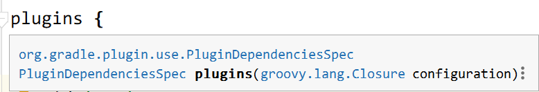

使用 IDEA 创建一个基于 Gradle 的项目
打开 IDEA

选择 Create New Project

选择项目类型

填写项目坐标

等待，出现 BUILD SUCCESSFUL... 说明创建成功

查看项目配置
进入 File -> Setting，或快捷键 Ctrl + Alt + S 。

左上角搜索框键入 ‘gradle’，你会看到项目的配置信息，大致是这样的

Gradle use home
-- Gradle 把下载的东西（依赖、插件、Gradle 包装器等）放在这里！ --
如果设置了 ‘GRADLE_USER_HOME’ 环境变量，IDEA 会根据环境变量进行推导，并推荐一个路径作为默认路径。
如果 IDEA 没有推导出， 会以 ‘C:\Users\Administrator.gradle’ 作为默认值 (Windows)。
-- 可以手动指定任意路径。手动指定优于环境变量。 --
看一下 Gradle use home:

Use gradle from
a . specified location ：使用之前下载到本地的 gradle 进行项目构建。
b. wrapper task in build.gradle : 通过执行构建脚本中自定义的 wrapper 任务下载gradle。
c . gradle-wrapper.properties : 使用配置文件提供的 url 下载gradle包装器。
推荐 c ，可以将Gradle版本的更新委派给Gradle并自动下载该版本的Gradle 。
查看项目目录结构

③ gradlew，gradlew.bat会： 解析wrapper文件，拿到gradle下载地址，首先判断本地是否存在该版本gradle，有则直接 利用 ./gradle 目录下对应的版本的 gradle 进行相应自动编译操作。 没有，根据地址下载到本地，在根据./gradle目录下对应版本的gradle进行相应的自动编译操作。
⑤ Java 插件引入了源集（Source sets）的概念，源集可以简单理解为“一组源文件的集合”，在逻辑上对源文件进行分组。 java插件提供了两个标准源集：main 和 test。这是 java 插件引入的两个约定，就不需要手动创建源文件目录和资源文件目录了。
⑥ build.gradle 构建脚本 Gradle 的自动化构建项目就是通过执行 build.gradle 构建脚本实现的。 而构建脚本中引入了项目需要用到的 gradle 插件。 Gradle可以认为是一个框架，负责定义流程和规则。而大多数的功能都是通过插件的方式来完成的。
认识 Gradle 构建脚本
group、version、plugin、repositories、dependencies 都是 Gradle 预定义好的方法，Gradle 在构建项目时会自动执行这些方法，我们只需要向里面传入参数，而大多数参数都是闭包。
group 、version
group 'cn.jt' // 等价于：setGroup('cn.jt')
version '1.0-SNAPSHOT' // 等价于：setVersion('1.0-SNAPSHOT')
plugin
plugins {
id 'java'
id 'war'
// id '插件名' <-- 引入插件
}
插件。plugin 方法的参数就是一个闭包：

我们也可以在 build.gradle 中自定义插件,刷新：
// 自定义插件
class MyPlugin implements Plugin<Project> {
@Override
void apply(Project project) {
//新建task hello
project.task('hello') {
doLast {
println 'Hello MyPlugin!'
}
}
}
}
// 引入插件，观察 other 中任务变化
apply plugin: MyPlugin
右侧 other 中多了一个我们刚才自定义的 ‘hello’ 任务：

我们双击运行：

当然你也可以自定义功能更加复杂的插件。
repositories
repositories {
mavenCentral()
}
仓库。这里调用了 mavenCentral() 的方法表示先从本地的 gradle 仓库中寻找依赖包，找到了直接导入，没找到再到 maven 中央仓库寻找。 也可以设置从阿里云下载。
repositories {
// mavenCentral()
maven {
url 'http://maven.aliyun.com/nexus/content/groups/public/'
}
}
这和上面是一样的，只是换了一个 url 。
dependencies
依赖。